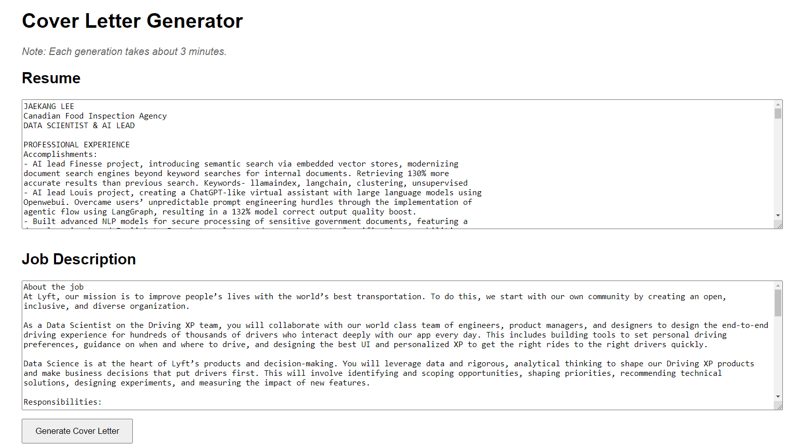
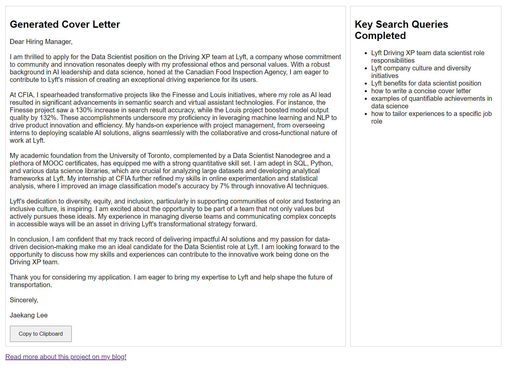
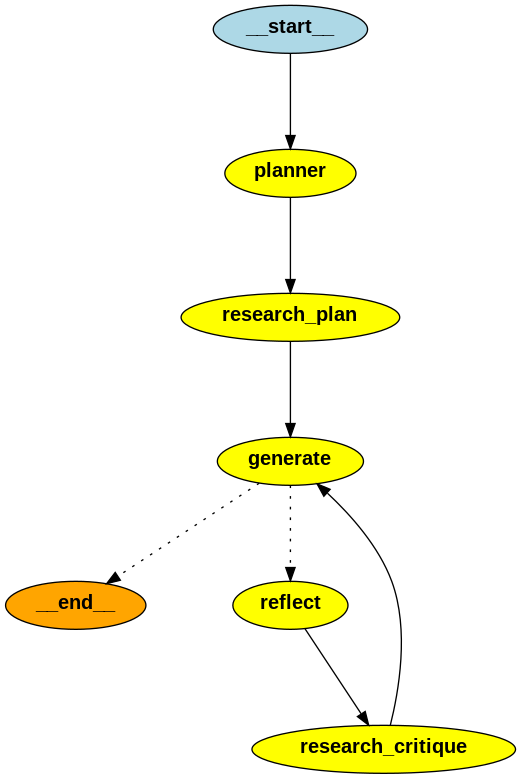

0. Try it out yourself! Webapp built with Render
note: may take 50 second to load as it is free tier.
Cover Letter Generator - Tavily Web Search + GPT4 Agentic Workflow 

1. Introduction
Introducing the AI-Powered Cover Letter Generator! This innovative project uses GPT-4 and Langgraph agents to create standout cover letters. With five specialized agents working together, it not only crafts compelling content but also conducts real-time online research using Tavily search API to incorporate the latest relevant information. Whether you’re a seasoned pro or just starting out, this tool helps you create a tailored, up-to-date cover letter that boosts your chances of landing that crucial interview.
Agentic workflow employs an inquiry-based approach, posing targeted questions to scour the web for pertinent information. For instance, it seeks answers to questions such as ‘What is the company’s history?’, ‘What are the key responsibilities of the applicant’s position within the company?’, and ‘What are the company’s core values?’ By automating this research process, agentic workflow streamlines the task of gathering essential details. As demonstrated in the example below, this technology successfully uncovered Snap Inc.’s adherence to a ‘Default Together’ policy, enabling the applicant to tailor their cover letter with insight that simulates thorough research.
| Prompt engineering (via Meta.ai llama 3.1) | Agentic workflow with web search (via gpt-4 agents) |
|---|---|
| Dear Hiring Manager, I’m excited to apply for the Data Scientist position at Snap Inc., where I can leverage my expertise in quantitative analysis, data mining, and statistical modeling to drive informed business and product decisions. With a strong background in mathematics, computer science, and statistics, I’m confident in my ability to deliver impactful data insights that enable product innovation and growth. As a seasoned data scientist with experience in managing projects and collaborating with cross-functional teams, I’m well-equipped to work in a highly collaborative environment and drive projects to completion with minimal guidance. My experience in AI lead roles has taught me the importance of effective communication, and I’m skilled at distilling complex technical concepts into actionable insights for stakeholders. My technical skills align with the requirements, including expertise in data modeling, SQL, programming languages (Python), and applied statistical techniques. I’m also familiar with machine learning and statistical analysis for building data-driven product solutions. My experience with MLOps, LLM, Langchain, and RAG systems will enable me to make a meaningful contribution to Snap’s product development. I’m particularly drawn to Snap’s commitment to empowering people to express themselves, live in the moment, and have fun together. As a data scientist, I believe that data-driven insights can help unlock new product opportunities and improve user experiences. I’m excited about the prospect of joining a team that shares my passion for innovation and collaboration. Thank you for considering my application. I’m looking forward to discussing my qualifications further. Sincerely, Jaekang Lee |
Jaekang Lee Vancouver, BC, Canada Phone: 778-929-6940 Email: tonylee015@gmail.com July 22, 2024 Hiring Manager Snap Inc. Dear Hiring Manager, I am writing to express my interest in the Data Scientist position at Snap Inc., as advertised. With a robust background in data science and artificial intelligence, particularly in the realm of quantitative analysis, data mining, and statistical modeling, I am excited about the opportunity to contribute to Snap’s mission of improving the way people live and communicate through innovative products. As the AI Lead for the Canadian Food Inspection Agency, I spearheaded the Finesse project, revolutionizing internal document search capabilities through semantic search and embedded vector stores, achieving a 130% increase in result accuracy. My leadership in the Louis project resulted in a 132% boost in model output quality for a ChatGPT-like virtual assistant, demonstrating my ability to overcome complex AI challenges. These experiences have honed my expertise in delivering impactful, data-driven insights that align perfectly with the responsibilities outlined for the role at Snap Inc. My academic foundation from the University of Toronto, complemented by a Data Scientist Nanodegree from Udacity, has equipped me with a deep understanding of mathematics, computer science, and statistics. This education, paired with my hands-on experience in managing projects and collaborating with cross-functional teams, positions me to effectively drive informed business and product decisions at Snap. In my current role, I have successfully managed projects with a focus on scalability, working closely with frontend, backend, and DevOps interns. My collaborative approach, utilizing tools like GitHub and weekly Teams meetings, ensures seamless communication and project delivery. My technical proficiency spans a wide array of tools and languages, including Python, Git, Docker, and machine learning frameworks, which I have applied in various projects and Kaggle competitions. My passion for data science extends beyond my professional work. I maintain a personal machine learning and data science blog and am currently developing innovative projects, such as a two-player game that challenges AI in unique ways and a cover letter generator using advanced AI techniques. These initiatives reflect my creativity and dedication to the field. I am particularly drawn to Snap Inc.’s “Default Together” policy, as I firmly believe in the power of collaboration and in-person interaction to foster a vibrant and effective work environment. I am eager to bring my analytical skills, product sense, and innovative mindset to the Product team at Snap, contributing to the special ways we bring our community together. Thank you for considering my application. I am looking forward to the opportunity to discuss how my background, skills, and enthusiasms can be aligned with the dynamic work at Snap Inc. Please find my resume attached for your review. Sincerely, Jaekang Lee |
2. Code
We connect the output of an agent’s output as an input to another agent in the flow. In case of reflection loop, we set a maximum revision number equal to two times in this example.
You can find the full notebook here. Run code on Colab.
Requirements 1. Tavily search API key 2. One of OpenAI API key, AzureOpenAI API key, or Anthropic API key

3. Result - agents’ outputs in detail
Let us analyse each agent’s contribution, one by one
3.1 Planner agent
3.1.1 Planner agent creation prompt
▶ See prompt
"You are an expert writer tasked with writing a high level outline of a cover letter. Write such an outline for the given applicant to given job description. Give an outline of the cover letter along with any relevant notes or instructions for the sections."
3.1.2 Planner agent’s raw output
▶ See output
- Header
- Applicant’s Contact Information
- Name: Jaekang Lee
- Address: Vancouver, BC, Canada
- Phone Number: 778-929-6940
- Email Address: tonylee015@gmail.com
- Date of Application
- Employer’s Contact Information
- Company Name: SoundHound AI
- [Include if available: Hiring Manager’s Name, Company Address]
- Salutation
- Dear [Hiring Manager’s Name or “SoundHound AI Hiring Team” if name is not known],
- Introduction
- Briefly introduce yourself and state the position you are applying for.
- Mention how you learned about the job opening.
- Express your enthusiasm for the role and the company.
- Body Paragraph 1: Relevant Experience and Accomplishments
- Highlight your role as an AI Lead and your accomplishments in AI projects, emphasizing those related to NLP and machine learning, which are relevant to ASR technologies.
- Discuss the Finesse and Louis projects, showcasing your experience with large language models and semantic search technologies.
- Mention your success in building advanced NLP models for secure processing of sensitive documents and image classifiers for agricultural compliance.
- Body Paragraph 2: Educational Background and Technical Skills
- Outline your educational qualifications from the University of Toronto and Udacity, focusing on relevant coursework and projects.
- Detail your technical skills that align with the job requirements, such as proficiency in Python, deep learning frameworks, and experience with ASR or NLP.
- Body Paragraph 3: Alignment with Job Requirements
- Draw parallels between the job description and your experience, particularly your work with machine learning, deep learning techniques, and voice AI applications.
- Mention any experience with Kaldi, PyTorch, TensorFlow, and on-device models, if applicable.
- Highlight your ability to write production-level code and your familiarity with containerization technologies like Docker, which are pluses for the role.
- Body Paragraph 4: Cultural Fit and Soft Skills
- Discuss your passion for AI and machine learning, as evidenced by your personal blog and ongoing projects.
- Emphasize your ability to work collaboratively with cross-functional teams, a key requirement for the role.
- Reflect on your enthusiasm for contributing to a diverse and values-driven company like SoundHound AI.
- Conclusion
- Reiterate your interest in the position and the value you would bring to SoundHound AI.
- Mention your availability for an interview and your willingness to provide further information or references.
- Thank the hiring team for considering your application.
- Sign-off
- Professional closing (e.g., Sincerely, Best regards),
- Your Name
- Notes/Instructions:
- Customize the cover letter with any specific names or details provided by SoundHound AI.
- Keep the tone professional and enthusiastic throughout the letter.
- Ensure that the cover letter is concise, ideally not exceeding one page.
- Proofread the cover letter for any grammatical or typographical errors before sending.
- If possible, research SoundHound AI’s core values and integrate them into your cover letter to demonstrate cultural alignment.
- Use metrics and specific examples to quantify your achievements and impact in previous roles.
- Align your technical skills and experiences with the job description to show you are a strong fit for the role.
3.2 Research Planner agent
3.2.1 Research Planner agent creation prompt
▶ See prompt
"You are a researcher charged with providing information that can \
be used when writing the following cover letter for the given job description. Generate a list of search queries that will gather \
any relevant information. Focus on generating a search query that answers one specific question in detail. Have at least one question about the company. Only generate 3 queries max."
3.2.2 Research Planner agent’s raw output
▶ See generated search query
- search query 1: how to write a cover letter for a software engineer position
- search query 2: best practices for highlighting machine learning experience in a cover letter
- search query 3: examples of cover letters for voice AI technology positions
3.2.3 Research Planner agent’s online search
▶ See returned search documents
search query 1:
how to become a software engineer (2024 Guide) Software Engineer Cover Letter Examples BrainStation’s Software Engineer career guide is intended to help you take the first steps toward a career in software engineering. Here is a step-by-step guide to help you get started on your cover letter: 1.Write a strong introduction that will capture …
Create the letter heading. The heading at the top of your letter includes your full name and contact information, making it easy for hiring managers to identify and contact you. Below your name, list your current phone number, email address and city and state…
search query 2:
Here are a few examples of Machine Learning Engineer cover letters. You can refer to these as you begin drafting your cover letter. Example 1. Dear [Hiring Manager Name], My passion for programming and expertise in implementing machine learning models would make me an excellent addition to your team…
Make sure to highlight these skills in your cover letter. 3. Showcase Your Passion: Employers want to see that you are passionate about Machine Learning. You can demonstrate this by talking about any personal projects you’ve worked on, online courses you’ve taken, or books you’ve read on the subject. 4. …
search query 3:
An AI Cover Letter Generator is a tool that combines machine learning, natural language and artificial intelligence to create cover letters you can use to apply for jobs!. Complex algorithms power AI cover letter generators AI and can help you produce a custom letter quickly. Some will even scan your resume to echo your work experience descriptions, including the right resume skills and resume …
In this article, we’ll look at how to use AI to write a cover letter. We’ll go over the steps to follow and give you an example of what an AI-helped cover letter might look like. By the end, you’ll have a better idea of how to use AI to make your job search easier. Remember, a cover letter is your chance to tell your story. AI can help you tell …
3.3 Writer agent
3.3.1 Write agent creation prompt
▶ See prompt
"You are an assistant tasked with writing excellent 3 to 5 paragraph cover letter including introduction, sales pitch and conclusion. \
Generate the best cover letter possible for the applicant's chance of getting an interview at the job. \
Make sure to address all the wants from job description and show that applicant is capable, one by one. \
Think about the following strategy,
S - situation. Describe the situation
T - task. Give details on what you had to do
A - action. Give details on actions you have taken
R - result. Describe the result of the situation
\
Additionally, consider using bold or underline font to grab attention appropriately. Do not overuse this styling method. \
If the user provides critique, respond with a revised version of your previous attempts. \
Utilize all the information below as needed:
------
{content}"
3.3.2 Write agent’s raw output
▶ See generated draft
Dear SoundHound AI Hiring Team,
I am writing to express my keen interest in the Software Engineer position at SoundHound AI, as advertised. With a Bachelor’s degree in Mathematics with minors in Computer Science and Statistics from the University of Toronto, a Data Scientist Nanodegree from Udacity, and extensive professional experience as a Data Scientist & AI Lead, I am excited about the opportunity to contribute to your core speech technology team.
In my current role at the Canadian Food Inspection Agency, I spearheaded the AI lead Finesse project, which revolutionized our internal document search engines by introducing semantic search capabilities. This initiative resulted in a 130% improvement in search accuracy. Additionally, I led the Louis project, developing a ChatGPT-like virtual assistant that enhanced model output quality by 132%. My expertise in NLP models and image classifiers has been instrumental in securely processing sensitive documents and automating agricultural compliance with a remarkable 97%+ accuracy.
My educational background has equipped me with a solid foundation in algorithm design, data structures, and software design, all of which are critical for the role at SoundHound AI. My technical skills are a strong match for your requirements, including proficiency in Python, experience with deep learning frameworks, and a track record of developing solutions using TensorFlow and PyTorch. I am also familiar with Kaldi and have successfully deployed models on-device using TensorFlow Lite.
I am particularly drawn to SoundHound AI’s commitment to creating Voice AI products that enable natural interaction, and I am eager to apply my knowledge in ASR, machine learning, and deep learning techniques to help enhance your voice AI products. My experience in running benchmarks and optimizing ASR models aligns with the responsibilities outlined in the job description. Moreover, my ability to troubleshoot and resolve customer-related issues will ensure that I can provide tailored ASR solutions to meet specific challenges.
SoundHound AI’s values resonate deeply with me, and I am enthusiastic about joining a company that prioritizes diversity, equity, inclusion, and belonging. I am confident that my collaborative spirit, problem-solving skills, and passion for innovation will make me a valuable addition to your team.
Thank you for considering my application. I am looking forward to the opportunity to discuss how my skills and experiences align with SoundHound AI’s mission. Please feel free to contact me at your earliest convenience to schedule an interview.
Sincerely, Jaekang Lee
3.4 Reflection agent
3.4.1 Reflection agent creation prompt
▶ See prompt
"""You are a professional hiring manager grading a candidate's cover letter for the team and potential interview. \
Generate critique and recommendations for the applicant's submission. \
Provide detailed recommendations, including requests for length, depth, style, missing skills, etc."""3.4.2 Reflection agent critique
▶ See generated critique
- Introduction:
- The introduction is clear and states the candidate’s interest and relevant educational background. However, it could be more engaging by briefly mentioning a specific aspect of SoundHound AI’s work that excites the candidate.
- Relevance of Experience:
- The candidate does a good job of highlighting relevant experience with specific projects and quantifiable achievements. However, the cover letter could benefit from a more detailed explanation of how these projects relate to the responsibilities of the Software Engineer position at SoundHound AI.
- Technical Skills:
- The technical skills mentioned are relevant and well-aligned with the job description. The candidate could enhance this section by providing brief examples of how they have applied these skills in a professional setting.
- Company Values:
- The candidate mentions alignment with the company’s values, which is good, but it would be more impactful if they provided an example of how they have demonstrated these values in their past work or personal initiatives.
- Call to Action:
- The closing paragraph includes a polite call to action, which is appropriate. However, it could be more assertive by suggesting a specific time frame for follow-up.
- Length and Depth:
- The cover letter is an appropriate length, but some paragraphs could be condensed to make the letter more concise. The depth of technical detail is good, but the candidate should ensure it does not overshadow their ability to work within a team or adapt to SoundHound AI’s specific work environment.
- Style and Tone:
- The tone is professional and demonstrates enthusiasm. However, the candidate could use more dynamic language to convey passion and drive.
Recommendations:
- Introduction:
- Start with a hook that shows personal connection or enthusiasm for SoundHound AI’s work or mission.
- Relevance of Experience:
- Provide a brief example of how past projects could directly translate to the role at SoundHound AI.
- Technical Skills:
- Include a short anecdote or case where the candidate’s technical skills led to a successful outcome.
- Company Values:
- Share a specific instance where the candidate has exemplified SoundHound AI’s values in their career.
- Call to Action:
- Suggest availability for an interview and express willingness to provide further details or work samples.
- Length and Depth:
- Edit for brevity where possible, ensuring each sentence adds value to the application.
- Style and Tone:
- Use more active voice and powerful verbs to create a dynamic and compelling narrative.
- Missing Skills:
- If the job description mentions skills or experiences not covered in the cover letter, the candidate should address them, even if it’s to say they are eager to learn or develop in those areas.
- Proofreading:
- Ensure there are no typos or grammatical errors. Consider having a third party review the letter for clarity and impact.
- Personalization:
- Address the letter to a specific person if the name is available. If not, “Dear SoundHound AI Hiring Team” is acceptable.
By implementing these recommendations, the candidate’s cover letter will be more personalized, impactful, and aligned with the expectations of SoundHound AI’s hiring team.
3.5 Research Planner agent loop
3.5.1 Research Planner agent creation prompt
▶ See prompt
"You are a researcher charged with providing information that can \
be used when making any requested revisions (as outlined below). \
Generate a list of search queries that will gather relevant and important information. Only generate 3 queries max."
3.5.2 Research Planner agent raw output
▶ See genearted search query
- search query 1: how to write an engaging introduction for a cover letter
- search query 2: examples of demonstrating company values in professional experience
- search query 3: effective call to action phrases for cover letters
3.5.3 Research Planner agent’s online search
▶ See genearted search query
search query 1:
You’ll get more into the details after your opening paragraph, of course. But your cover letter opener should still tell the reader, “This person can do something for us,” rather than, “This job would really help them.”. 4. Stick to the point. Your opener, while creative, should still be relevant to the job… The headline on the image says, “Cover letter format” A woman sits at a table writing on a piece of paper. There’s a simple cover letter represented by lines. On one side of the cover letter, there are labels for the sections of the cover letter. The labels are: 1. Date and contact information 2. Salutation/greeting 3. First, introduce yourself 4…
search query 2:
Your guide to company values (best practices + examples) Our personal values inform how we think, feel, and act. They direct our behaviors and guide us to a success we can be proud of. The same can be said of businesses’ core values. Core company values are the guiding principles or underlying rules that shape how organizations do business …
search query 3:
effective call to action phrases for cover letters
When you write your call to action, make sure it remains polite, courteous and professional. Follow these steps to write an effective call to action for your cover letter: 1. Research the company and job description. Make sure your entire cover letter contains keywords mentioned in the requirements and preferences sections of the job description…
Review several call-to-action examples for marketing, job posts, cover letters and websites to help you craft effective ones and understand why they work…
3.6 Writer agent loop
3.6.1 Write agent’s raw output
▶ See generated final draft
Dear SoundHound AI Hiring Team,
I am writing to express my keen interest in the Software Engineer position at SoundHound AI, as advertised. With a robust background in data science and AI, particularly in the realm of natural language processing and machine learning, I am excited about the opportunity to contribute to your core speech technology team. My professional journey has been marked by innovative projects and a deep commitment to advancing conversational AI, making me a strong fit for this role.
As the AI Lead for the Finesse project, I spearheaded the development of a semantic search engine using embedded vector stores, which significantly modernized internal document retrieval, achieving 130% more accurate results than the previous system. In the Louis project, I created a ChatGPT-like virtual assistant, enhancing user interactions by implementing agentic flow with LangGraph, which resulted in a 132% increase in model output quality. My expertise extends to building advanced NLP models for secure processing of sensitive government documents and deploying image classifiers with a 97%+ accuracy rate, streamlining compliance processes and outperforming human experts.
My educational foundation from the University of Toronto, coupled with a Data Scientist Nanodegree from Udacity, has equipped me with a solid grasp of algorithms, data structures, and software design. I am proficient in Python and have hands-on experience with deep learning frameworks essential for ASR technologies. My technical skills are complemented by my success in Kaggle competitions and my proactive engagement in the AI community through my personal blog and innovative projects.
The responsibilities outlined in the job description resonate with my experience and skills. I have a proven track record of training, tuning, and testing machine learning models, and I am adept at collaborating with cross-functional teams to integrate AI technologies into products. My experience with TensorFlow Lite and end-to-end ASR pipelines, along with my proficiency in production-level Python code, positions me to deliver high-quality ASR solutions and support SoundHound AI’s mission to make conversational intelligence universally accessible.
SoundHound AI’s commitment to diversity, equity, inclusion, and belonging aligns with my professional ethos. I am eager to join a company where my unique voice can contribute to a team with global perspectives and where innovation is driven by a shared passion for excellence. I am available for an interview at your earliest convenience and can be reached at 778-929-6940 or via email at tonylee015@gmail.com. Thank you for considering my application. I look forward to the possibility of contributing to SoundHound AI’s success.
Sincerely, Jaekang Lee
4. Conclusion
There are areas for improvement.
The contents returned from Tavily search can be further refined by using RAG ranking-system. Increase quantity of returned documents.
New better performing llms release quickly. Thanks to Langchain, we can swap out just the model from this pipeline.